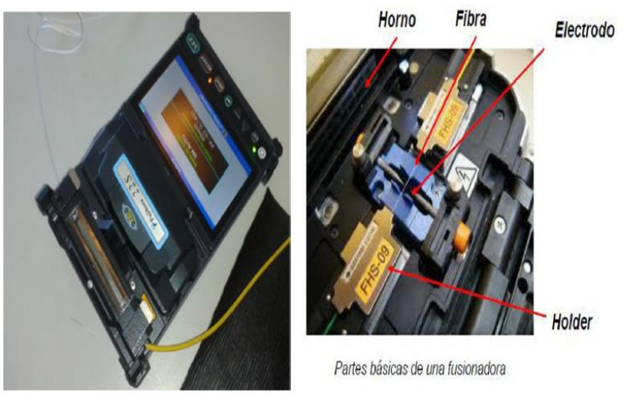
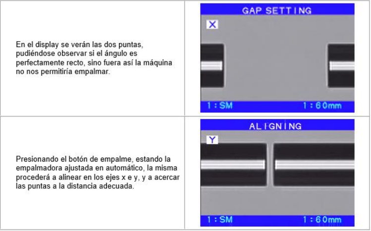

pepe
pepe
CABLE DE FIBRA OPTICA
cable de fibra
herramientas y articulos a usar
⋆tijera
⋆pinza peladora de fibra optica
⋆cortadora de precion
⋆fucionadora
cuenta con un horno para quemar el "termocontraible"yquede mas seguna la fucion
tambien cuenta con una pantalla que sirbe para ver como estan los extremos de fibra antes de hacer algo

cable de fibra

cable
⭐︎Cubierta de plástico: El tubo amarillo exterior que protege todo el interior. Está hecha de plástico PVC (Polivinilo) o LSZH (plástico libre de halógenos).
⭐︎Cerda de pelo (Aramida): Los hilos claros que resisten los tirones y la tensión. Están hechos de fibras sintéticas de Aramida (conocidas comercialmente como Kevlar).
⭐︎Una capa de plástico: El revestimiento blanco intermedio que aísla el centro. Está hecho de un plástico polímero duro (generalmente un buffer de nailon o poliéster).
⭐︎Vaina: El tubo azul protector que abraza directamente el núcleo. Está hecho de un plástico flexible de acrilato o plástico PBT (un tipo de poliéster de ingeniería).
⭐︎Fibra óptica: El filamento transparente del centro por donde viaja la luz. Está hecha de vidrio de sílice puro de alta calidad (cristal) o, en algunos modelos específicos, de plástico óptico.
¿Cómo Funciona?
El cable funciona como una "autopista de alta velocidad" protegida para la luz:
Pulsos de Luz:
El internet, los videos o los datos se convierten en billones de destellos de luz
por segundo mediante un láser en la central.
El Principio del Espejo:
Esa luz entra a cada uno de los micro-hilos de vidrio que están dentro
de los tubos de colores. Cada hilo tiene un núcleo de vidrio y un revestimiento externo. La luz
choca contra las paredes internas y, en lugar de salirse, rebota constantemente hacia
adelante (gracias a la reflexión interna total).

Protección Total:
Mientras la luz viaja rebotando a velocidades increíbles por el vidrio, toda la
estructura exterior (el gel, los tubos de colores, el Kevlar y el plástico negro) trabaja en equipo
para asegurarse de que ese frágil hilo de vidrio no sufra tensiones, no se moje y no se quiebre,
garantizando que los datos lleguen intactos a su destino.
El pasos a segir
primeramente cortar al medio los cables necesarios que queramos fusionar
luego cortar la cubierta de plastico amarillo (lo que no necesitemos)
despues procederemos a cortar los hilos para que no estorben al queres cortar las otras capas

cortadora de precion
posteriormente encontraras un revestimiento blanco el cual tendremos que retirar
con la pinza peladora de F.O
segidamente tendremos que quitar con sumo cuidado la vaina utilizando la misma pinza
ya con la f.o libre tendremos que hacer uso de la cortadora de precion para que la misma
tenga un corte prolijo para los dos extremos se fucionen de forma correcta
pero antes de fucionarla hay que limiar la fibra optica con un papel y alcohol
e agregar el termocontraible de uno de los extremos

ya con la f.o colocada en la fucionadora hay que fijarse en la pantalla
si su colocasion fue optima para fusionar
despues de fucionar la f.o hay que deslizar cuidadosamente el termocontraible
hacia la mitad buscando que quede lo mas sentrado en el empalme
y proceguir a meter la parte que tenga el termocontraible en el horno

protección de los empalmes